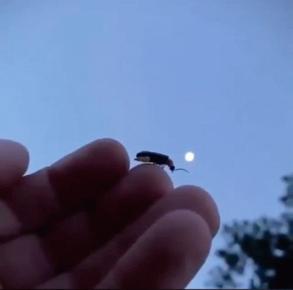
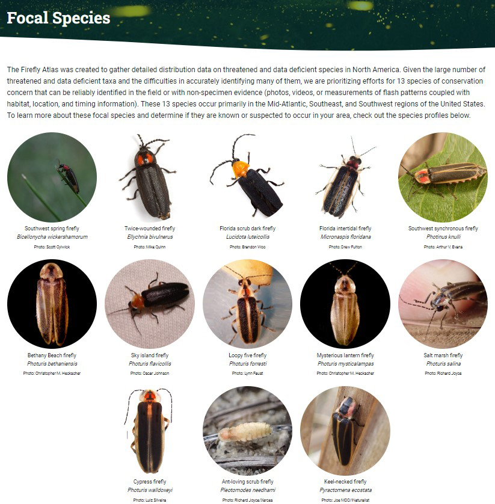

GLOWING, GLOWING, GONE?

For the longest time, fireflies were a mainstay of early summer nights in the south and across the United States, twinkling in the sky at dusk in May and June to mark the official start of summer. As you may have noticed, fireflies are disappearing from the sky at an alarming rate. This decline has been observed all over the world, but has been especially prevalent in developing countries.
Human Impact on Fireflies: Urban development, including increased construction and drained marshes, dries out the environment needed by the larva. Pesticides either kill the larva or kill off its food supply.
But together, here in
About Ben
Save the Fireflies Today is a nonprofit organization
founded in 2009 by Ben Pfeiffer, a recognized firefly researcher
and Texas-certified master naturalist.
“It was maybe 2008 when I noticed the fireflies in South Texas were disappearing,”
Ben says. “There weren't as many as I remembered when I was a kid. And then I heard a
report on firefly decline on NPR Radio that confirmed it.” Ben was uniquely suited to tackle this problem. He is a 6th generation Texan who grew up exploring the hills of the Texas Hill Country and brush country of South Texas where he developed a deep understanding of the state's unique ecology. Ben is also a beekeeper and certified-naturalist with
Texas Parks & Wildlife. Ben attended Texas State University in San Marcos for a
Bachelor of Science in Biology.
He combined that with a background in marketing, web development,
and SEO to build a website and foundation that would help him and others take action.
FUN FACT
How to Catch a Firefly
Get prepared for this year!
Fireflies start
appearing as early as April and May in the
US.
Learn tips on how best to catch and
release fireflies. LEARN MORE
A Texas Firefly Guide by the Founder
2023 Conservation Status
- ü¶ó Threatened with extinction: 11%
- ü¶ó Near threatened: 2%
- ü¶ó Least concern: 33%

Get prepared for this year!
Fireflies start
appearing as early as April and May in the
US.
Learn tips on how best to catch and
release fireflies.
A Texas Firefly Guide by the Founder
2023 Conservation Status
- ü¶ó Threatened with extinction: 11%
- ü¶ó Near threatened: 2%
- ü¶ó Least concern: 33%